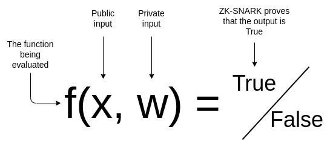
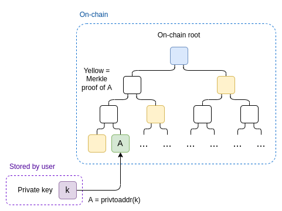

如何用ZK-SNARK保护隐私
使用ZK-SNARK保护隐私的一些场景
ZK-SNARK 是一种强大的加密工具，也是人们在区块链领域及其他领域构建的应用程序中日益重要的一部分。
ZK-SNARK如何工作
假设你有个公共输入$x$，一个私有输入$w$，还有一个公共函数$f(x, w) \rightarrow {True, False}$对输入执行某种验证。使用ZK-SNARK，你可以证明某个$w$对于给定的一些$f$和$x$得到$f(x, w) = True$，无需展示$w$是什么。此外，验证者即使知道$w$,ZK-SNARK也可以比验证者自己计算$f(x, w)$更快的速度验证证明。

这样就给予ZK-SNARK两个属性，隐私性和可扩展性。上述所提，我们接下来的例子讲更为关注隐私性。
会员资格的证明
假设你有有个以太坊钱包，你想要证明这个钱包是真人注册同时不透露注册人的信息。 我们可以用下列数学公式来描述这个场景：
- The private input ($w$):your address $A$，and the private key $k$ to your address
- The public input ($x$):the set of all addresses with verified proof-of-humanity profiles{$H_1…H_n$}
- The verification function $f(x,w)$:
- $w$ as the pair $(A,k)$, and $x$ as the list of {$H_1…H_n$}
- Verify that $A$ is one of the addresses in $x$
- Verify that $PvToAddr(k) = A$
- Return $Ture$ if both verifications pass, $False$ if either verification fails
证明者提供他们的地址$A$和他们关联的私钥$k$同时将$w = (A,k)$作为私有输入提供给$f$。他们将从链上获得的已验证用户集{$H_1…H_n$}作为公共输入。他们运行ZK-SNARK证明算法，该算法生成他们的输入是否正确的证明。证明者发送这个证明给验证者，同时他们提供获得经过验证的个人资料列表的区块高度。
验证者读取证明者指定的链上这个高度的列表同时检查这个证明。如果检查通过，验证者确信证明者是真人的证明。
上述会员资格证明的优化
上述证明系统中存在一个缺陷：验证者需要知道整个用户集合同时他们需要花$O(n)$的时间将起输入到ZK-SNARK机制。
我们可以通过将包含所有配置文件的链上Merkle根作为公共输入传递来解决这个问题。我们添加一个Merkle证明证明者的账户位于树的相关部分作为另一个私有输入。

代币和ZK-SNARK
Zcash和Tornado.cash等项目允许您拥有隐私保护的货币。现在你可以根据上面“ZK proof of humanity”，但不是证明他对配置文件的访问权限，而是使用它来证明对代币的访问权限。但是，我们必须解决隐私保护和双花问题。
这里我们将要解决他们。拥有代币的人都有一个私人秘密$s$。本地电脑计算这个叶子结点$L = (s, 1)$（这个叶子结点被公布在链上并且成为状态），$N = hash(s,2)$（nulliier)。这个状态会被存在默克尔树上。
如果想使用这个代币，发送者必须在这里使用ZK-SNARK：
- The public input contains a nullifier $N$, the current or recent Merkle root $R$, and new leaf $l$ ()
- Thw secret input contains a secret $s$, a leaf $L$, and a Merkle branch $M$
- The verification function checks that;
- $M$ is a valid branch that proving that $L$ is a leaf in the tree with root $R$, which $R$ is the current Merkle root of the state
- $hash(s,l) = L$
- $hash(s,2) = N$
这次交易包含nullifier$n$和一个新叶子$L$，我们无需证明叶子结点